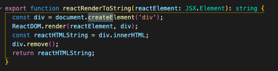
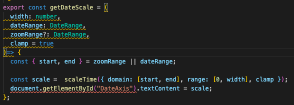

UNIT 12
OBJECTIVES
- Demonstrate Footer Icon Navigation
- Incorporate icons from Ionicons
- Fetch JSON data
- Create Elements using JavaScript
- Set the text content of an element
- Implement a repeating background texture
OBJECTIVES
Work Example
Work Example
